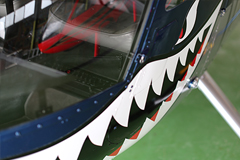

フライトクラブ
東京ヘリコプタークラブはヘリコプターへ気軽に関わりたいと願うライセンサーの方に様々なコースをご用意しております。
■ビギナーコース
ヘリコプターに乗ったことのない人向けのコース。
気軽に体験フライトができます。
ライセンス取得にチャレンジしてみたいが、どのようなものが体験フライトしてみたい。
ヘリコプターに興味はあるけど実物に触れる機会がない。
一度でいいからヘリコプターで空を散歩してみたい。といった方、一度ご連絡ください。
定期的におこなっている「飛び会」ではフライトトレーニングする方もいれば、数分のフライトを楽しむ方もいらっしゃいます。
もちろん見学だけの参加も可能です。
初めてヘリコプターのフライトを体験される方は、きっと人生観を変えてしまうような感動や高揚感を感じることでしょう。
お気軽に当クラブに遊びにいらして一緒にヘリコプターの話しで盛り上がってみませんか。
■ペーパーライセンサーコース
ペーパーライセンサー向けのコース。
ライセンスは持っているけど、しばらく乗っていない人に気軽にトレーニングできる方法を紹介しています。
当クラブではヘリコプターのフライトトレーニングが可能です。
ヘリコプターの免許は持っているが、もう何年も操縦していないという方に朗報です。
当ヘリコプタークラブでは低価格でフライトトレーニングができます。
またベテランの先輩がセーフティーでついているので、安心してフライトできます。
しばらく操縦していないと、日常生活にない行動パターンだけに飛行感覚は失われていってしまいます。
しかし一度苦労して習得した技能は予想以上に早く甦ってきます。
技量維持は月1回のフライトがターニングポイントです。
当クラブでは、本人の技量レベルに合わせて丁寧な指導をしますので安心して技量アップすることが出来ます。
またベテラン先輩からは飛ぶために必要な知識からプロセジャーまでしっかり教えてもらえます。
海外でライセンスを取得した方は、日本で飛ぶための気象知識、情報取得、無線交信方法等の習得が必要になりますが、 この点も丁寧にレクチャーいたします。
あなたも当クラブを活用して空を楽しめるようなライフワークをエンジョイしてみませんか？
パイロットして日本の空を自由に飛べるようになることは本当に素晴らしいことです。
きっとあなたの人生に輝きが増すはずです。
■ライセンサーコース
ヘリコプターのライセンスを持っている人向けのコース。
出資が少なくヘリコプターのオーナーになる方法を紹介しています。
ヘリコプターの購入をご検討のライセンサー様に向けヘリコプターの共同購入者を募集しております。
ヘリコプターは一人で購入するには高価な買い物です。
しかし、数名集まって共同購入することでその金額を軽減することができます。
ご購入後も当クラブがヘリコプター使用のスケジュール管理と保管いたしますのでご安心してご利用いただけます。
■ヘリオーナーコース

ヘリコプターのオーナー様に向けたコース。
念願のヘリコプターを手に入れたがフライトする機会が中々ないといった方へのコースです。
ヘリコプターを購入してもなかなか乗る機会がなく維持費だけかさんでいくとお困りのヘリオーナー様。
ヘリコプターを有効活用すべく当団体にお貸しいただけませんか？
お借りしたヘリコプターは丁重な管理の下、当クラブの運営に使用させていただきます。
もちろん、レンタル費はお支払いいたします。（料金は応相談）
ヘリコプターの維持費軽減にお役立て下さい。